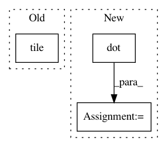

7ba65487591fb4795d6384540bd4f580e820ff61,keras_gat/graph_attention_layer.py,GraphAttention,call,#GraphAttention#Any#,78
Before Change
// Compute feature combinations
repeated = K.reshape(K.tile(linear_transf_X, [1, N]), (N * N, self.F_)) // (N^2 x F")
tiled = K.tile(linear_transf_X, [N, 1]) // (N^2 x F")
combinations = K.concatenate([repeated, tiled]) // (N^2 x 2F")
combination_slices = K.reshape(combinations, (N, -1, 2 * self.F_)) // (N x N x 2F")
After Change
// Compute feature combinations
// Note: [[a_1], [a_2]]^T [[Wh_i], [Wh_2]] = [a_1]^T [Wh_i] + [a_2]^T [Wh_j]
attn_for_self = K.dot(
linear_transf_X, attention_kernel[0]) // (N x 1), [a_1]^T [Wh_i]
attn_for_neighs = K.dot(
linear_transf_X, attention_kernel[1]) // (N x 1), [a_2]^T [Wh_j]
In pattern: SUPERPATTERN
Frequency: 3
Non-data size: 3
Instances
Project Name: danielegrattarola/keras-gat
Commit Name: 7ba65487591fb4795d6384540bd4f580e820ff61
Time: 2018-03-14
Author: mwright@berkeley.edu
File Name: keras_gat/graph_attention_layer.py
Class Name: GraphAttention
Method Name: call
Project Name: rflamary/POT
Commit Name: e39f04a9465bd9f1447423eb2a592cc9356589a9
Time: 2018-07-05
Author: vivienseguy@h40.57.229.10.1016746.vlan.kuins.net
File Name: examples/plot_free_support_barycenter.py
Class Name:
Method Name:
Project Name: danielegrattarola/keras-gat
Commit Name: 9d56361641a64ff73ac630812ecd4964eedbc7aa
Time: 2017-11-09
Author: daniele.grattarola@gmail.com
File Name: gat/graph_attention_layer.py
Class Name: GraphAttention
Method Name: call